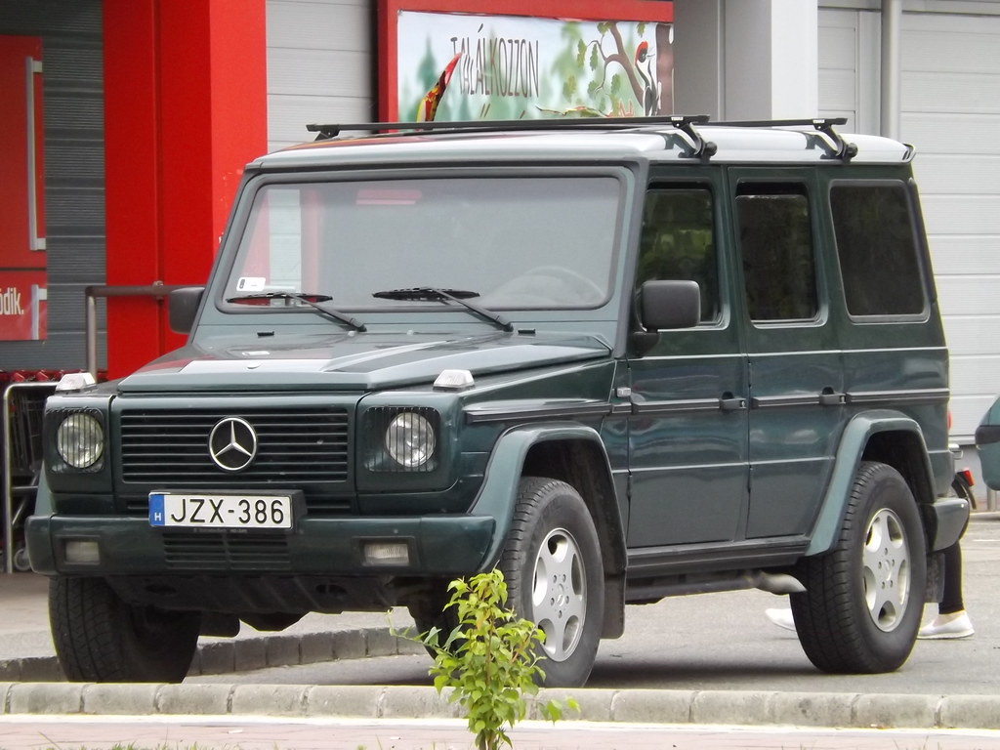

The Mercedes-Benz G-Class colloquially known as the G-Wagon (as an abbreviation of Geländewagen) is a four-wheel drive automobile manufactured by Magna Steyr (formerly Steyr-Daimler-Puch) in Austria and sold by Mercedes-Benz. Originally developed as a military off-roader, later more luxurious models were added to the line. In certain markets, it was sold under the Puch name as Puch G until 2000.
The G-Wagen is characterised by its boxy styling and body-on-frame construction. It uses three fully
locking differentialsone of the few passenger car vehicles to have such a feature.
Despite the introduction of an intended replacement, the unibody SUV Mercedes-Benz GL-Class in 2006, the G-Class is still in production and is one of the longest-produced vehicles in Daimler's history, with a span of 44 years. Only the Unimog surpasses it. In 2018, Mercedes-Benz introduced the second-generation W463 with heavily revised chassis, powertrain, body, and interior. In 2023, Mercedes-Benz announced plans to launch a smaller version of the G-Class, named "little G"—though no definitive date was given for the launch a stainless-steel spare-tire cover, running boards and Burl Walnut wood interior trim. In the same year, the 100,000th G Model was built in Graz and in 1994, the model line was officially renamed the G-Class. Ventilated front disc brakes and a driver's air bag became standard. In 1996 the automatic transmission became an electronically controlled 5-speed unit and headlamp washers, cruise control, and a front passenger's air bag were added. In 1998, the range-topping G 500 with a 296 hp V8 was introduced for series production
The W460 was introduced at a press event held at the off-road proving ground in Toulon, France, and went on sale in September 1979 with three engine choices and five body variants. Over the next decade, the engine and transmission choices were expanded or updated along with more and more optional extra cost creature comforts (air conditioning, automatic transmission, power windows, etc.).
Mercedes-Benz never officially exported the G-Wagen to the United States because it was considered more of a utilitarian vehicle and didn't fit the American perception of what Mercedes-Benz was. During the 1980s, the
grey import specialists brought the W460 to the United States and modified them to meet the US regulations. In 1988, the new federal law, Motor Vehicle Safety Compliance Act, closed the loopholes and tightened up the regulations for grey imports, making it more difficult and more expensive for the registered importers to federalise the W460 in a very small number. The other issue was severely underpowered engines in the 230 GE, 280 GE, and 300 GD models might not have appealed to the American market as was the case with the Mercedes-Benz 380 SEL in the early 1980s.

This version was assembled from Complete Knock Down (CKD) by ELBO, formerly a Steyr-Daimler-Puch branch division, in Thessaloniki, Greece for the Greek Army. Additionally, the was also assembled at Mercedes-Benz's Aksaray plant in Turkey. The engine options were a litre four-cylinder inline petrol and later a 2.9-litre five-cylinder inline diesel.This version was assembled from Complete Knock Down by ELBO, formerly a Steyr-Daimler-Puch branch division, in Thessaloniki, Greece for the Greek Army. Additionally, the CKD was also assembled at Mercedes-Benz's Aksaray plant in Turkey. The engine options were a 2.3-litre four-cylinder inline petrol and later a 2.9-litre five-cylinder inline diesel.